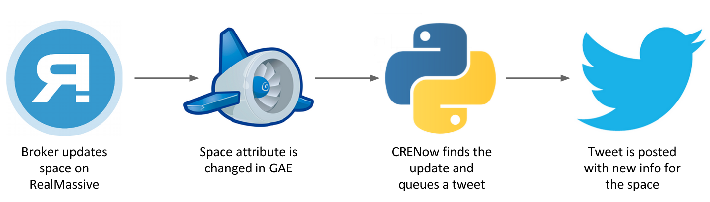

What is CRENow?
CRENow is a marketing automation tool used by RealMassive to syndicate commercial real estate data onto Twitter. More specifically, it is a bot that listens to RealMassive's database for updates and keeps that data fresh on Twitter in feed form.
What's the point?
In commercial real estate, information is slow moving. Stale data is a large contributing factor to why many unleased spaces sit idle for much longer than they should. By using Twitter, we were able to spread information in real time to a large audience to generate leads more quickly. And it worked. RealMassive receieves around 60% of its web traffic from Twitter.
My Role
This was one of two intern projects I worked on for a large portion of my summer internship in 2014. I worked with the one other intern on CRENow. We had ownership of developing technical specs for the product, coordinating feature sets with the marketing team, developing the bot, and integrating it into the RealMassive web app.
CRENow is built in Python using the Twython Twitter API wrapper library. It is set up as a handler within the RealMassive web app running on Google App Engine.
Technical Aspects
The main technical challenge of architecting CRENow was integrating it into the larger umbrella of the RealMassive web app. We were using Google App Engine as our datastore, which comes with a built-in "Edited At" field. However that field was updated everytime someone viewed a space, and there were good reasons to have it work that way for other parts of the site. However for the purposes of our Twitter Bot, that meant we had to find new ways to look for and reflect updates to spaces. Because I had been working on the main web app all summer, I knew that a lot of our data models often got dirty when they were updated, meaning relationships between buildings, spaces, broker and tenant objects were broken due to existing problems with our data model. For this reason, I suggested that we set up a chron job that would both clean up and rebuild those relations and serve as our crawler to search for updates to the data fields we were interested in. That way, whenever the space's price, availability date, or available square footage was updated, our Twitter Bot would find it and also repair existing relations.
The flow for the app looked as follows:
Something cool...
CRENow was featured in the Austin Business Journal! Check out the article here.